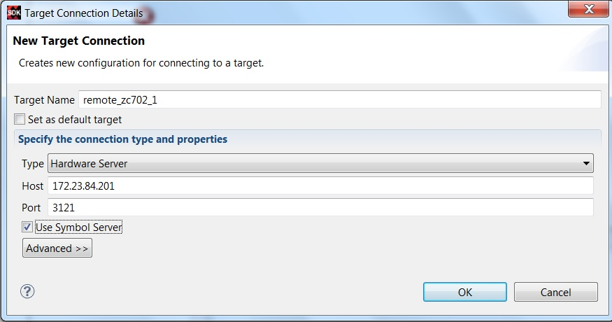
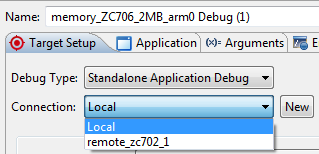
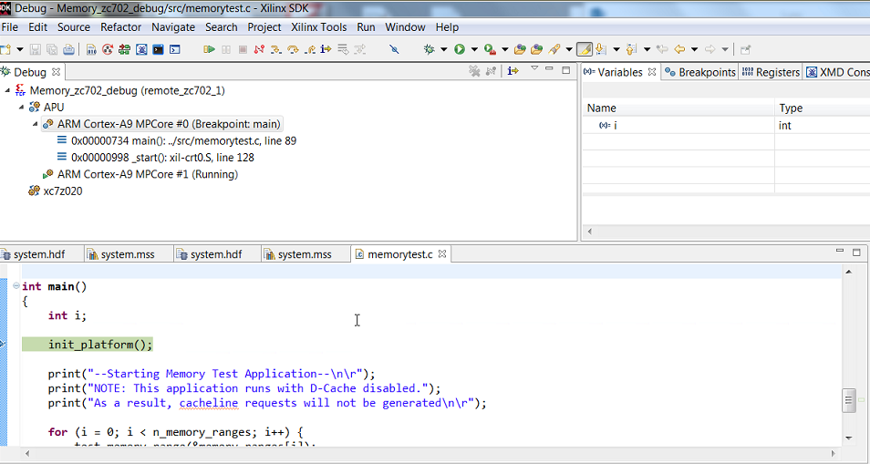

- Launch SDK.
- Select the application to debug remotely.
- Select Run > Debug Configurations.
- Create a new System Debugger configuration.
- In the Target Setup tab, click New to create a new target connection.

- In the New Target Connection dialog box, add the required details for the remote host that is connected to the target.
- Target Name: Type a name for the target.
- Host: IP address or name of the host machine.
- Port: Port on which the hardware server was launched, such as 3121.

- Select Use Symbol Server to ensure that the source code view is available, during debugging the application remotely. Symbol server acts as a mediator between hardware server and SDK.
- Click OK.
- Now you can see that there are two available connections. In this
case, remote_zc702_1 is the remote connection.

- Select or add the remaining debug configuration details
and click Debug.
